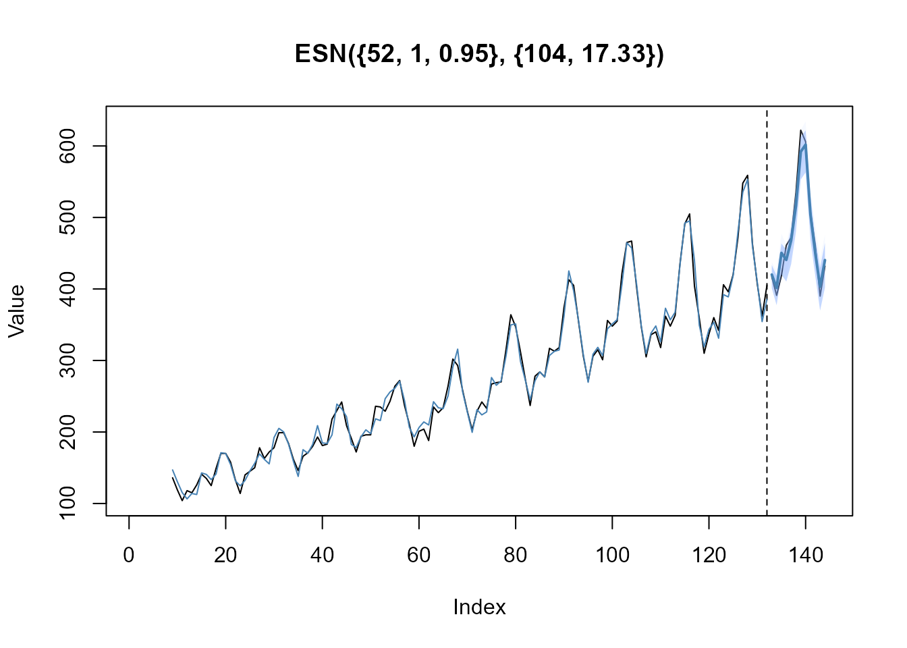

Prepare dataset
In a first example, we want to model the well-known
AirPassenger time series (ts object). The
dataset contains monthly totals of international airline passengers (in
thousands) from January 1949 to December 1960 with 144 observations in
total. The first 132 observations are used for model training
(n_train) and last 12 observations are used for testing
(n_ahead). xtrain and xtest are
numeric vectors containing the training and testing data.
# Forecast horizon
n_ahead <- 12
# Number of observations (total)
n_obs <- length(AirPassengers)
# Number of observations (training data)
n_train <- n_obs - n_ahead
# Prepare train and test data as numeric vectors
xtrain <- AirPassengers[(1:n_train)]
xtest <- AirPassengers[((n_train+1):n_obs)]
xtrain
#> [1] 112 118 132 129 121 135 148 148 136 119 104 118 115 126 141 135 125 149
#> [19] 170 170 158 133 114 140 145 150 178 163 172 178 199 199 184 162 146 166
#> [37] 171 180 193 181 183 218 230 242 209 191 172 194 196 196 236 235 229 243
#> [55] 264 272 237 211 180 201 204 188 235 227 234 264 302 293 259 229 203 229
#> [73] 242 233 267 269 270 315 364 347 312 274 237 278 284 277 317 313 318 374
#> [91] 413 405 355 306 271 306 315 301 356 348 355 422 465 467 404 347 305 336
#> [109] 340 318 362 348 363 435 491 505 404 359 310 337 360 342 406 396 420 472
#> [127] 548 559 463 407 362 405
xtest
#> [1] 417 391 419 461 472 535 622 606 508 461 390 432Train ESN model
The function train_esn() is used to automatically train
an ESN to the input data xtrain, where the output
xmodel is an object of class esn. The object
xmodel is a list containing the actual and
fitted values, residuals, the internal states
states_train, estimated coefficients from the ridge
regression estimation, hyperparameters, etc. We can summarize the model
by using the generic S3 method summary() to get detailed
information on the trained model.
# Train ESN model
xmodel <- train_esn(y = xtrain)
# Summarize model
summary(xmodel)
#>
#> --- Inputs -----------------------------------------------------
#> n_obs = 132
#> n_diff = 1
#> lags = 1
#>
#> --- Reservoir generation ---------------------------------------
#> n_states = 52
#> alpha = 1
#> rho = 1
#> density = 0.5
#> scale_inputs = [-0.5, 0.5]
#> scale_win = [-0.5, 0.5]
#> scale_wres = [-0.5, 0.5]
#>
#> --- Model selection --------------------------------------------
#> n_models = 104
#> df = 15.53
#> lambda = 0.036From the output above, we get the following information about the trained ESN model:
| Value | Description |
|---|---|
n_obs |
Number of observations (i.e., length of the input time series) |
n_diff |
Number of differences required to achieve (weak-) stationarity of the input training data |
lags |
Lags of the output variable (response), which are used as model input |
n_states |
Number of internal states (i.e., predictor variables or reservoir size). |
alpha |
Leakage rate (smoothing parameter) |
rho |
Spectral radius for scaling the reservoir weight matrix |
density |
Density of the reservoir weight matrix |
scale_inputs |
Input training data are scaled to the interval
(-0.5, 0.5)
|
scale_win |
Input weights matrix is drawn from a random uniform
distribution with interval (-0.5, 0.5)
|
scale_wres |
Reservoir weight matrix is drawn from a random uniform
distribution with interval (-0.5, 0.5)
|
n_models |
Number of models evaluated during the random search
optimization to find the regularization parameter
lambda
|
df |
Effective degrees of freedom in the model |
lambda |
Regularization parameter for the ridge regression estimation |
Forecast ESN model
The function forecast_esn() is used to forecast the
trained model xmodel for n_ahead steps into
the future. The output xfcst is a list of class
forecast_esn containing the point forecasts,
actual and fitted values, the forecast horizon
n_ahead and the model specification
model_spec. We can use the generic S3 method
plot() to visualize the point forecast within
xfcst and add the holdout test data xtest.
# Forecast ESN model
xfcst <- forecast_esn(xmodel, n_ahead = n_ahead)
# Extract point and interval forecasts
xfcst$point
#> [1] 420.5592 402.2205 449.4405 438.6973 466.9279 513.2675 580.4146 588.4173
#> [9] 497.5575 448.8337 405.7796 443.9338
xfcst$interval
#> lower(80) lower(95) upper(80) upper(95)
#> [1,] 401.0506 410.1288 435.6200 439.5025
#> [2,] 376.8707 383.7836 422.2915 427.7195
#> [3,] 420.4539 428.0697 470.5884 477.6391
#> [4,] 407.8879 417.4741 459.1989 465.2480
#> [5,] 434.5537 444.3180 489.6266 495.6535
#> [6,] 479.1714 488.8532 534.6986 544.8950
#> [7,] 541.6526 556.2674 603.6298 615.8202
#> [8,] 550.4265 568.7352 611.3039 620.8753
#> [9,] 460.5468 478.2108 520.0018 536.9712
#> [10,] 415.8190 425.2954 471.0781 490.6883
#> [11,] 371.6403 382.5814 433.4297 443.4057
#> [12,] 406.4784 419.3160 470.5589 481.1878
# Plot forecast and test data
plot(xfcst, test = xtest)